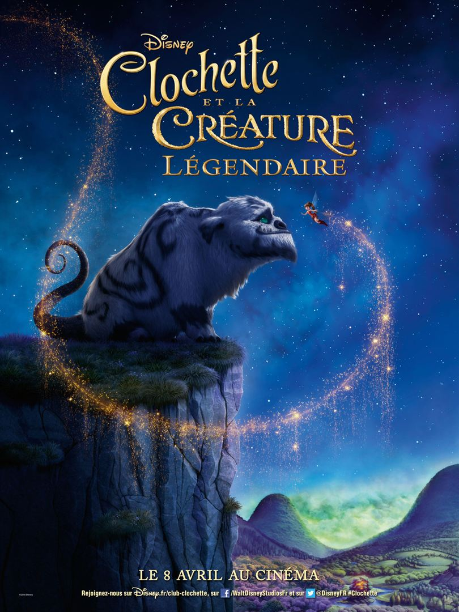

<section class="article-disney-plus py-5">
  <div class="container">
    <div class="row justify-content-center">
      <article class="col-sm-8">
        <h2>Clochette et la créature légendaire</h2>
        <h5>L'amitié entre Noa, fée des animaux, et Grognon, créature légendaire…, 9 avril 2021</h5>
        <p>
          « Clochette et la créature légendaire » est un long métrage animé, d’une durée de 1h15, réalisé par Steve Loter pour les studios Disney, sorti le 8 avril 2015.
        </p>

        <div class="article_img">
          
        </div>

        <br>

          <p>
            <strong class="emphase">De quoi ça parle :</strong> Après le passage d’une comète verte, un rugissement effroyable perturbe la tranquillité de la vallée des fées. Noa, fée des animaux, part à la recherche de l’animal qui n’est autre qu’une gigantesque créature inconnue qu’elle finira par appeler Grognon. Nyx, la fée éclaireuse en charge de la sécurité de la vallée découvre une mystérieuse légende et est bien décidée à capturer la créature contre l’avis de Noa qui tente par tous les moyens de convaincre ses amis de voir au-delà de l’apparence de son nouvel ami.

          </p>

          <p>
            <strong class="emphase">Mon avis :</strong>  faut voir en ce dessin animé plus loin de de simples aventures de la fée Clochette. Noa est véritablement au cœur de l’histoire ainsi que Grognon.
          </p>
          <p>
            L’histoire est bien plus émouvante que l’on ne pourrait le croire avec quelques sympathiques rebondissements et toujours le côté gaffeur de Clochette qui apporte la note humoristique à ce long métrage.
          </p>
          <p>
            C’est un appel à la tolérance, à l’acceptation de la différence des autres, à ne pas juger avant de connaitre. Un appel à la bienveillance et à la découverte de soi et des autres, une ode à l’amitié et une avalanche d’émotions.
          </p>

          <p>
            <strong class="emphase">Anecdote :</strong>  Steve Loter s’est inspiré de sa petite fille et de son amour pour les animaux afin de créer le personnage de Noa.
          </p>
          <p>
            C’est la 6ème fois que Lorie Pester prête sa voix à la fée Clochette.
          </p>

            <br>

        <iframe width="823" height="463" src="https://www.youtube.com/embed/DTUYTL4Rric" title="YouTube video player" frameborder="0" allow="accelerometer; autoplay; clipboard-write; encrypted-media; gyroscope; picture-in-picture" allowfullscreen></iframe>

        <p class="signature text-end"><strong>Angèle</strong></p>
      </article>
    </div>
  </div>
</section>


